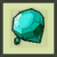
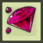
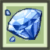

Stage 2
Road to 3rd Class & Dr.Pho's GuideList of Content
- New Equipment
- El Resonance
- Accessories
- Party Finder
- Gate of Darkness
- Henir's Time and Space
- 3rd Class
Once you reach level 99, you will unlock "Elrianode", and the 2nd guide of the "Dr.Pho's Guide", found in the middle top of your screen, your main objective on this stage, is to fully complete the first 2 Dr.Pho's Guides.
This armor is really good for early game, since alongside your weapon, is a main source of Combat Power.
There are different tiers of normal magic stones:
It's fine if you get low values on armor, instead search high values on weapon.
Now, as said somewhere in Dr. Pho's Guide, you need to do Heroic Dungeon, as this lets you recieve 4 "Ancient Guardian Wedge" and 1 "Ancient Iron Wedge" that increase your max sockets by 1 (Can only be applied once per equipment piece).
 is a leveling system that is shared account-wide, increasing its level will give you points, Also known as ERP, which you can exchange for various perks, listed here:
is a leveling system that is shared account-wide, increasing its level will give you points, Also known as ERP, which you can exchange for various perks, listed here:
This is a system unlocked via quest, after you complete 7 dungeons from elrianode and onwards.
You can use the points you gain however you like, but the recommended way is to use them are:
Accesories are pieces of equipment that give small piece of stats
Elrianode Armor
After clicking Dr. Pho's 2nd Guide, you'll notice that the first mission is to do "Hall of El" 3 times, once you finish that, you will be able to claim the "Restored Elrianode Armor".This armor is really good for early game, since alongside your weapon, is a main source of Combat Power.
Apocalypse-Type Weapon
Once you acquire the Restored Elrianode Armor you will notice that your weapon is not good anymore, since it's old by this point, so you will need to spam the "Add's Theory Dungeon" until you get the Apocalypse-Type Weapon Cube.Notice that since the drop is RNG, this can drop the very first run or 10 runs, but is highly unlikely that it takes long *
Using this cube will give you a new weapon, which will be way stronger than the one you had previously.Socketing
Your Armor and Weapon has something called "Sockets", which are empty when you get them. you can use Magic Stones for socket by pressing Inventory -> Magic Stone Enchant.There are different tiers of normal magic stones:
|  |  |  |

|
| T1: Magic Stone | T2: Advanced Magic Stone | T3: Refined Magic Stone | T4: Sage's Magic Stone |
Refined Magic Stones are highly gifted throughout the Dr.Pho's Guide, so use them to socket Elrianode Armor and Apocalypse-Type Weapon *
The stats you should socket are Maximize % and Critical %, if you get Critical or Maximize on 1 slot but all other slots are wrong, click the blue square to lock the slot and Click "Auto-Equip" to reroll all unlocked socket slots.It's fine if you get low values on armor, instead search high values on weapon.
Now, as said somewhere in Dr. Pho's Guide, you need to do Heroic Dungeon, as this lets you recieve 4 "Ancient Guardian Wedge" and 1 "Ancient Iron Wedge" that increase your max sockets by 1 (Can only be applied once per equipment piece).
El Resonance
El Resonance| Effect | Increase per point | Max |
| All Attack Power | +10 | N/A |
| All Defense | +10 | N/A |
| All Elemental Resistance | +10 | 500 |
| Max HP | +0.5% | 25% |
| Active, Tenacity, Strength, Bravery Skill Damage (All Skill Damage Increase) | +0.35% | 35% |
| Damage Dealt / Recieved Increase (Polarize) | +0.15% | 7.5% |
| Damage Increase to Boss Monsters | +0.3% | 15% |
| Damage Decrease from Boss Monsters | -0.4% | 20% |
| Adaptation | +0.07% | 7% |
| Skill MP Cost Decrease | +0.2% | 20% |
| Skill Cooldown Decrease | +0.2% | 20% |
| EXP Gain | +2% | 200% |
| ED Gain | +2% | 200% |
| Item Drop Rate | +2% | 200% |
This is a system unlocked via quest, after you complete 7 dungeons from elrianode and onwards.
You can use the points you gain however you like, but the recommended way is to use them are:
For Farm
EXP Gain Increase → ED Gain Increase → Item Drop IncreaseFor DPS
All Skill Damage Increase → Adaptation / Skill Cooldown Reduction → Polarize → Boss Damage IncreaseFor Support
Skill Cooldown Reduction → Skill MP Cost / Adaptation → All Skill Damage Increase → Max MP IncreaseAccesories
Accesories are pieces of equipment that give small piece of stats
If you have any information that you can contribute into, and would like to update, contact sinxaegh on discord